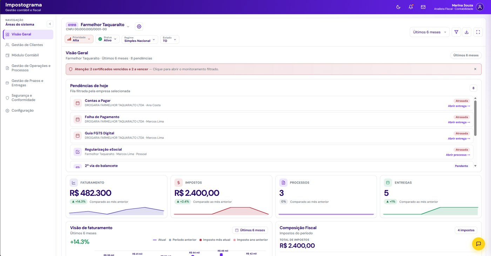
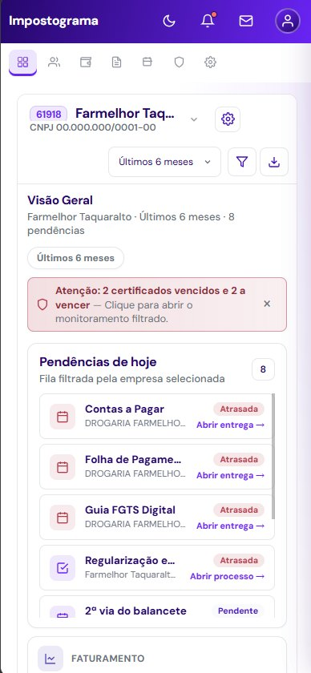
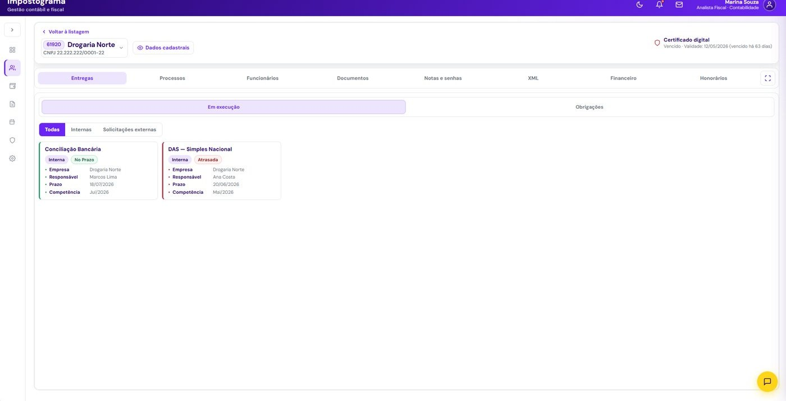
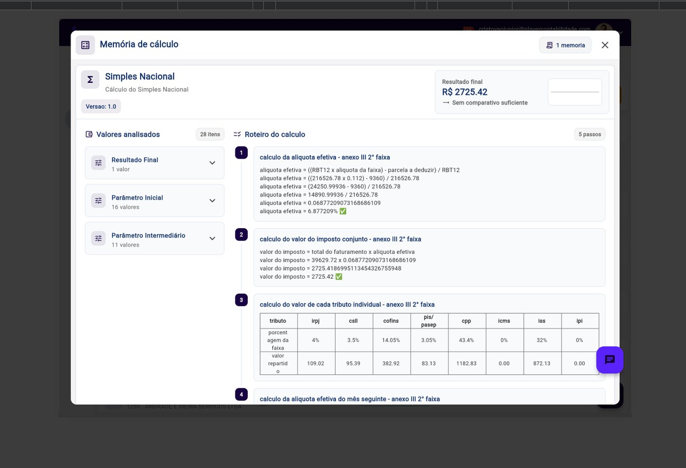

Documento atrasa, chega errado ou some no WhatsApp. O fechamento trava.
Cobrança e notificação no canal certo; documentos classificados e ligados à entrega.
Centralize clientes, processos, entregas, financeiro e automações fiscais em um único ambiente — do cadastro à entrega, sem depender de planilha nem cobrar o cliente no manual.
Dados no Brasil · LGPD


Sem automação, o escritório trabalha contra o tempo
Documento atrasa, chega errado ou some no WhatsApp. O fechamento trava.
Cobrança e notificação no canal certo; documentos classificados e ligados à entrega.
Repetir captura, cálculo e guia em dezenas de fluxos — difícil escalar a carteira.
Da nota à DAS e obrigações no mesmo fluxo, com rastreio e menos intervenção manual.
Planilha paralela, status espalhado e multa que vira desgaste para o escritório.
Kanban, responsáveis, histórico e alertas — visão clara do que falta e de quem cuida.
A operação do escritório, em um só lugar
Carteira organizada: cadastro, certificado, responsáveis e histórico num só lugar.
Obrigações do mês em Kanban: etapas, prazos, anexos e quem cuida de cada uma.
O sistema baixa, calcula, declara e gera guia. Menos trabalho manual no portal.
Integração com o banco para conciliação e exportação para a contábil.
Gestão de clientes
Cadastro, certificado, tags e histórico, a empresa vira o hub do escritório.
Fiscal, contábil e pessoal definidos por cliente, sem atrito na equipe.
Acesso externo, WhatsApp e e-mail: o cliente acompanha sem ligar o tempo todo.

Módulos que sustentam a operação
Gestão, documentos, auditorias, kanban, regras fiscais, Simples e financeiro.
Processos em Kanban
Comentários, rastreamento e centralização no mesmo card. Clique em um card para avançar a etapa.
Automação do Simples Nacional
Captura as notas do período via certificado.
Calcula o faturamento, transmite e gera a DAS.
Entram no mesmo fluxo, com rastreio — sem depender do portal.

Conecte contas via Open Finance, controle honorários, faça matching automático e projete o caixa.
Avisa prazo, entrega e cobrança no canal certo, sem a equipe cobrar no manual.
Seu DAS de setembro já está disponível. Vencimento em 3 dias.
Produtividade, controle e previsibilidade

Simule sua economia
Estimativa simples, baseada na redução de retrabalho de 70% divulgada pelo produto. Resultados reais variam por carteira.
Impostograma
Clientes, obrigações, documentos, tarefas, automações fiscais e financeiro ficam no mesmo ambiente — com histórico, prazos e clareza de responsabilidade.
Dados no Brasil · LGPD